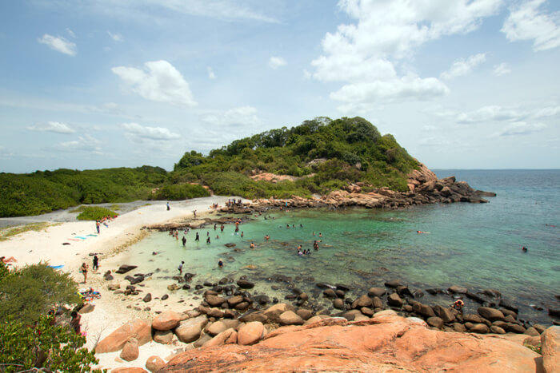
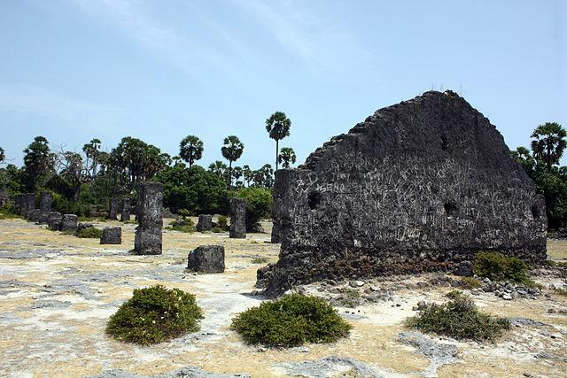
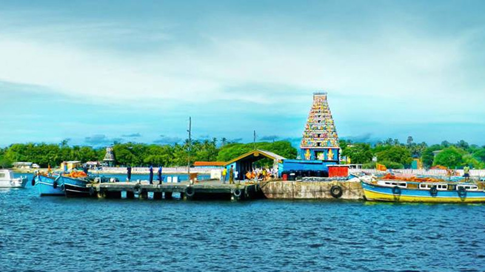

| Home | Tourism Statistics | About Us | Contact Us | Transport Methods |
|---|
|
 Pigeon Island Floating in the great blue 1km offshore, Pigeon Island, with its powdery white sands and glittering coral gardens, tantalises with possibilities. A nesting area for rock pigeons, the island is beautiful enough, with rock pools and paths running through thickets, but it’s the underwater landscape that’s the real star. The reef here is shallow, making snorkelling almost as satisfying as diving, and it’s home to dozens of corals, hundreds of reef fish (including blacktip reef sharks) and turtles.Note that the recent surge in tourism has damaged the reef to a degree, so don't expect a pristine marine environment. Close to the shore, some day trippers stomp all over shallow coral. |
 Nedunateevu Nedunateevu or neduntivu is a small island located in Jaffna, Sri lanka. The island was called as Delft island by the Dutch colonials. The island expands for about 50 sq. km. this flat and oval shaped island is usually wind-swept. After reaching to Kurikadduwan, you can take a ferry to the Delft Island. You can see a group of ponies scattering in the ground. The island is surrounded with shallow water and few kinds of aquatic fishes. Palmyra palm trees, dry shrubs and semi arid tropical type plants can be seen. To the west of the island you can see a ruined complex of south Indian chola Architecture. A ruined dagoba, is positioned beside the ruins. A pigeon house made by Portuguese, still exists. |
 Nainativu sometimes spelt 'Nayinativu', is the modern Tamil name of an island of the Jaffna archipelago. Though smaller in size than the neighbouring islands, it's the archipelago's top destination for travellers interested in Sri Lanka's cultural heritage, as Nainativu is a significant pilgrimage site in the first place. The modern Sinhala name of Nainativu is 'Nagadipa', also transcribed Nagadeepa, not to be confused with the homonymic ancient Pali term, which in Sri lanka's chronicles' is a designation of the entire Jaffna Peninsula. The ancient Tamil name of the island was Manipallavam. During the Dutch colonial period it was called Harlem. |